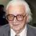
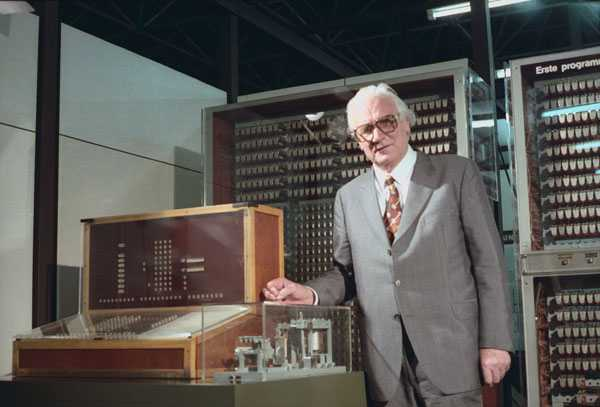

<div class="profile"><div>
  <div class="source">
Plankalkül (1943)
  </div>
  <div class="detail">
    
    <div class="search"><a href="http://www.google.com/cse?cx=partner-pub-6997921015773263:4467526896&ie=UTF-8&q=Konrad Zuse" target="_blank"></a> | <a href="http://en.wikipedia.org/wiki/Konrad_Zuse" target="_blank">wiki</a></div>
    <div class="name"><a href="http://www.thocp.net/biographies/backus_john.htm" target="_blank">Konrad Zuse</a></div>
    <div class="info"><b>Konrad Zuse</b> (German pronunciation: [<span class="IPA">ˈkɔnʁat ˈtsuːzə</span>]; 1910–1995) was a German civil engineer and computer pioneer. His greatest achievement was the world's first functional program-controlled Turing-complete computer, the Z3, which became operational in May 1941.
    <p><b><a href="http://en.wikipedia.org/wiki/Plankalk%C3%BCl" target="_blank">Plankalkül</a></b> (German pronunciation: [<span class="IPA">ˈplaːnkalkyːl</span>], "Plan Calculus") is a computer language designed for engineering purposes by Konrad Zuse between 1943 and 1945. It was the first high-level non-von Neumann programming language to be designed for a computer.</p>
    </div>
  </div>
  <div class="photo">
    
  </div>
</div></div>
